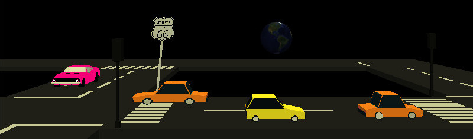
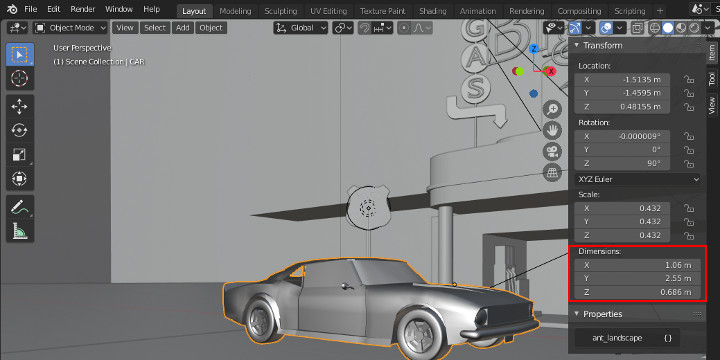

Test - Morphing & Uniform¶
Cate: Morphing transform & color¶
case: AnimType.U_ALPHA, U_MORPHi¶
html file:
test/html/morph/lerp-model.html
test/html/voxel-morph.html
test/html/voxel-morph-particles.html
The test defined 2 box object, with the 3rd as points referencing the boxes’ vertices and moving the points while changing the alpha.

A test case for basic morphing scripts.
1 2 3 4 5 6 7 8 9 10 11 12 13 14 15 16 17 18 19 20 21 22 23 24 25 26 27 28 29 30 31 32 33 34 35 36 37 38 39 40 41 42 43 | const points = {
id: 'points',
Obj3: { geom: xv.XComponent.Obj3Type.NA, // use the geometry of entity1
box: [200, 2, 1],
mesh: undefined, // THREE.Points
invisible: false }, // It's visible, but alpha 0?
Visual:{vtype: xv.AssetType.refPoint,
asset: 'entity1',
shader: xv.XComponent.ShaderFlag.randomParticles,
paras: {vert_scale: '120.0',
a_dest: 'entity2', // entity2.Obj3.mesh
// u_tex: 'tex/spark1.png',
u_tex: '../../assets/tex/crosstar.png',
a_noise: false}},
ModelSeqs: { script: [[
{ mtype: xv.XComponent.AnimType.U_ALPHA,
paras: {start: Infinity, // triggered by entity1
duration: 1.2, // seconds
alpha: [0.06, 0.9], // from, to
ease: xv.XEasing.Elastic.In} },
// both UNIFORMS and U_MORPHi should works for ShaderFlag.randomParticles
// { mtype: xv.XComponent.AnimType.UNIFORMS,
{ mtype: xv.XComponent.AnimType.U_MORPHi,
paras: {start: Infinity, // follow previous
duration: 1.2, // seconds
uniforms: { u_morph: [0, 1],
u_alpha: [0.1, 0.9] }},
followBy: [{entity: 'entity2',
seqx: 1, // index of the fade-in
start: 0.3}] },
{ mtype: xv.XComponent.AnimType.U_ALPHA,
paras: {start: Infinity, // triggered by entity1
duration: 1.2, // seconds
alpha: [0.9, 0.41], // from, to
ease: xv.XEasing.Elastic.In} }
]] },
CmpTweens: {}
};
xworld.addEntities(points);
/////// end pin
|
In MorphSeqs.script, the moving points, entity id of ‘points’, is defined as a refPoint, which makes the points object will be created according to the referenced object’s mesh vertices, defined with asset = “entity1”.
The morphing target is defined with uniforms.a_dest = ‘entity2’. Tween value is been tweened in between values defined in u_morph = [0, 1]. This makes vertices of points will moving between box of entity1 & entity2.
In this case only u_morph and u_alpha are supported by shader randomParticles.
case: U_ALPHA (Groups & Lines)¶
Since v0.3.18, U_ALPHA is supporting children updating, i.e. parent mesh.material. uniforms.u_alpha will be copied to mesh.chirldren.uniforms.u_alpha. This copying can support alpha morphing for mesh trees like Dynatex.

html file:
test/html/morph-alphas.html
test/html/dynamic-group-affine.html
The upper left curve can be animated with AnimType.U_ALPHA. But the middle left curve can’t animated with U_ALPHA because there is a dashSize property and x-visual created a curve using THREE.LineDashedMaterial.
The upper right text have a apply2Children property of true, which makes x-visual try updating all it’s children’s uniform.u_alpha. If the children meshes can be animated with u_alpha, the children meshes will also been updated.
The lower right is a group of lines using THREE.LineSegments object, which is not actually a group. ‘LineSegments using gl LINES mode for rendering <https://threejs.org/docs/index.html#api/en/objects/LineSegments>`_.
U_ALPHA can also been applied to children, if both parent & children can support uniforms.u_alpha. The 2nd test page dynamic-group-affine.html shows this. See AnimType.U_ALPHA paras.
case: AnimType.POSITION¶
html file:
test/html/morph/lerp-model.html
This test shows how to update target position and use a animation to move to there.
1 2 3 4 5 6 7 8 9 10 11 12 13 14 15 16 17 18 19 20 21 22 23 24 25 26 27 28 29 30 | const ent1 = {
id: 'entity1',
Obj3: { geom: xv.XComponent.Obj3Type.BOX,
transform: [ { translate: [0, 40, 0] } ],
box: [80, 80, 80] },
Visual:{vtype: xv.AssetType.mesh,
asset: 'tex/byr0.png' },
ModelSeqs: {
script: [
[{mtype: xv.XComponent.AnimType.POSITION,
paras: {
start: 0,
translate: [[0, 0, 0], [100, 0, 0]],
duration: 1 } } ],
[{mtype: xv.XComponent.AnimType.SCALE,
paras: {
start: Infinity,
scale: [[1, 1, 1], [1, 1, 1]],
duration: 1 } } ],
[{mtype: xv.XComponent.AnimType.SCALE,
paras: {
start: Infinity,
scale: [[1, 1, 1], [1, 1, 1]] } } ] ],
fFinished: ( twns, seqx ) => {
if (seqx === 2)
xv.XTweener.startSeq(twns, 1);
}
},
CmpTweens: {}
};
|
The user command interaction is handled in TestDynamicPos.update().
case: GLTF Handling¶
case: AnimType.gltf¶
html file:
test/html/gltf-city.html
test/html/gltf-car.html
test/html/gltf-verts.html
About nodes’ transformation:
The gltf nodes include a property of matrix, which is usually set by assets’ artists. As gltf nodes can be a tree structure, loading some nodes can cause problem if applying the node’s transformation.
The x-visual provide a brutal solution for this - just ignore all transformation. User can specify each node’s transformation in Obj3. The gltf-car.html used both methods. The road is using the gltf transformation, withTransform = true; while cars completely ignored all transformation and configured with a new set of paras.
case: GLTF transform¶
html file:
test/html/gltf-city.html
test/html/gltf-car.html
The 1st file loaded the entire gltf scene, without any post handling, but only transformed. Transformation are kept the same as the source assets, only within a single scene which is possible.
The 2nd file is a test of different gltf scale transformation. Gltf assets for the scene come from 3 different gltf files:
test/html/assets/city/scene.gltf
test/html/assets/earth/earth-low.gltf
examples/route66/route66.gltf
Here is a comparison of how different for different assets artists like to do.
{kind=link}

In the testing html, the 2 cars are using different transformation set by programmer.
Left car:
var nostalgicar = ecs.createEntity({
id: 'car66',
Obj3: { transform: [
{ translate: [-530, -80, -700] },
{ scale: [30, 30, 30] } ] },
Visual:{vtype: xv.AssetType.gltf,
paras: {nodes: ['CAR'],
withTransform: false},
asset: '../../../examples/route66/assets/route66.gltf'}
});
Right car:
var car_4 = ecs.createEntity({
id: 'car4',
Obj3: { transform: [
{ rotate: {deg: -90, axis: [0, 1, 0]} },
{ translate: [120, -80, -360] },
{ scale: [1, 1, 1] } ] },
Visual:{vtype: xv.AssetType.gltf,
paras: {nodes: ['Car_04'],
withTransform: false},
asset: 'city/scene.gltf'}
});
Cate: GLTF Nodes & Animation¶
html file:
test/html/gltf-car.html
This file loaded the some nodes in gltf asset, specifying animation scripts.
The animation can’t auto-started for the issue of asynchronous loading.
To use and loading gltf nodes, user must have some basic idea of gltf format. X-visual is intend for users of programmer. Here is some information about GLTF Format.
FYI, usually artists sometimes would not seriously care about how node’s matrices are working. In a GLTF scene, a node’s transformation is combined all of it’s ancestors. So the node’s transformation matrix itself will not makes what the objects should look like. X-visual provided a brutal way, just disable all the transformation in GLTF assets, with Visual.paras.withTransform = false, then set Obj3.transform as you, the programmer like.
case: Color & Texture Morphing¶
html file:
test/html/morph-color.html
The test shows how color & texture can be morphed with help of shader colorArray.
For Visual.paras of colorArray, see Visual.paras of colorArray.
FYI This page uses svg as rendered texture with help of Three.js CanvasTexture, which can’t be a scalable image instead. See wish list, SVG.